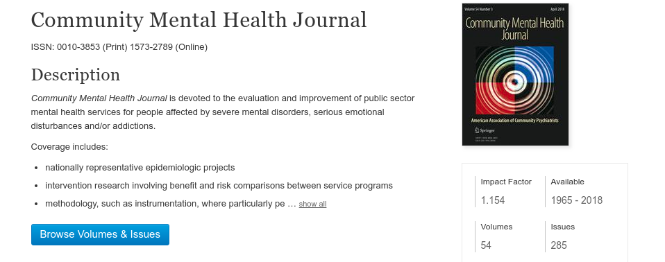

reputable mental health journals that publish all their articles free online.

Links to other Journals that you may link.
Health Psychology and Behavioral Medicine | Publisher: Taylor & Francis
Frontiers in Psychology | Publisher: Frontiers
International Journal of Mental Health Systems | Publisher: Biomed Central
Mental health evidence and research (MER) | Publisher: World health Organization
Child and Adolescent Psychiatry and Mental Health | Publisher: Biomed Central
BMC Psychiatry | Publisher: BioMed Central